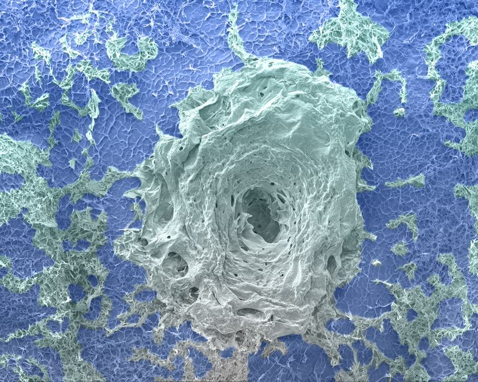

Honors & Service
Honors & Awards
- First Place, Art in Science Image Competition, UMass Lowell Core Research Facilities (2025)
- Member, Alpha Alpha Alpha (Tri-Alpha), the National Honor Society for First-Generation College Students (2025)
- Honored Student, Yıldız Technical University (2021)
- Best Paper Award, Academy of Romanian Scientists International Scientific Conference "Applications of Chemistry in Nanosciences and Biomaterials Engineering" (2021)
- TÜBİTAK 2209-A Research Project Support Program for Undergraduate Students, grant for the project "Development of Bioink for Bone Tissue Engineering Applications" (2019)

Service & Mentoring
Service
- Journal reviewer for Biomaterials, Biotechnology Letters, Annals of Biomedical Engineering, and Chemical Engineering Journal (2024 to present)
- Student Contact, Society for Biomaterials, Tissue Engineering Special Interest Group (2023 to present)
- Symposium Assistant, MRS Fall Meeting, Boston (2023, 2024)
Memberships
- Society for Biomaterials, member (2023 to present)
- Materials Research Society, student member (2023)
Teaching
- Graduate teaching assistant, Department of Chemical Engineering, UMass Lowell (2021 to 2024): Biomaterials Science & Engineering, Materials Science & Engineering, and Fundamentals of Electricity.
- Guest lecture on biofabrication and biomaterials in CHEN 5460.
Mentoring
- Research mentor in the Camci-Unal Lab. I have trained and supervised four undergraduate researchers.
- Research mentor in the NSF REU program (Summer 2023). I mentored an undergraduate student through a 10-week project on origami-inspired foldable paper-hydrogel scaffolds. The student presented the work as a poster at the BMES Annual Meeting (Seattle, 2023), and I am a co-author.